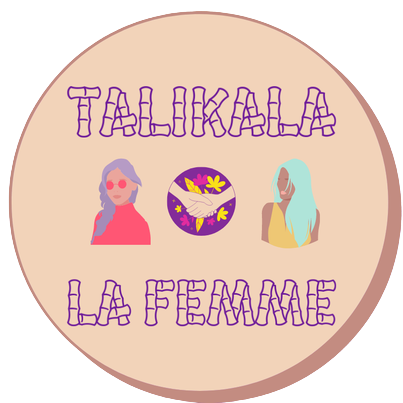

Background
Talikala is a non-governmental organization (NGO) run by women for women which offers support, advice, training, and counseling to women and girls who have been forced into the sex trade in Davao City, Philippines. The organization also promotes human rights by raising awareness on the rights of women and children and on issues such as reproductive health, gender sensitivity, anti-prostitution anti-trafficking in persons, online sexual abuse and exploitation, and capacity building of leaders of community-based organizations. Founded on August 7, 1987 by three women of diverse backgrounds: American lay missionary Cindy O'Donnell, Filipina social worker Elizabeth O'Brien, and former night club dancer Felicidad Prieto, the group was formed to help protect the prostituted women and children in Davao City from the crisis wreaked by HIV/AIDS, but it has since grown able to respond to the challenge of totally emancipating these exploited women and children from the bondage of human trafficking and prostitution. Its beneficiaries are women who were victims of prostitution and sex trafficking, aged from 6-50 years old, and its benefactors are organizations that Talikala has helped by providing essential technical support until these groups themselves became independent and fully self-supporting. One of these groups is Men in Valuable Partnership with Women and Children (MVP) which started as a grassroots and community-based organization of men that provides perspectives about prostitution from its demand side.
Significance
The most pressing communal issue that our partner institution is facing is the lack of consistent funding or in other words, the scarcity of resources such as donations, sponsors, and ( of course) consistent funding to run their proposed activities to fulfill their mission of regaining the dignity and image of prostituted women and creating a world without prostitution where no one thinks they can buy another human being for sexual use and flattery. As what we have stated earlier, Talikala is a non-governmental organization, which means it is not supported by the government and is fully voluntary that’s why money and funding is one of their problems.
Problem

Talikala struggle with promoting its cause on social media platforms, donations, and sponsors to run its proposed activities to fulfill its mission; to create a world where no one faces a life of prostitution and no one thinks they have the right to buy another human being for sexual use and flattery.
The problem that Talikala is dealing with right now is needing more help with spreading awareness on social media. They also lack donations, mainly rice and vegetables, since they lack resources due to the low profit and the ongoing pandemic. The community of Talikala inc. is a community that helps women and children that were victims of prostitution and human trafficking. Prostitution and human trafficking don't only take place physically but also online. Ampog said that "Facebook is now like "a catalog" used by consumers to look for a child or woman." Prostitution is not limited to personal transactions in clubs, streets, or message parlors and sex dens. Now, we see the influx of prostitution technology. This has a huge negative impact on women and kids because this ruins their future and the future of their generation. They will live in depression, have alcohol problems, and have lower self-esteem in adulthood. It leads to trauma and psychological disorder and a lot more. They will live in a way where they will remember how they were assaulted and it will tear them apart. It might be one of the reasons for them to stop going on with their lives, for they will think they won't have hopes anymore. Our desired condition we see for our partner institution is to grow and protect women and kids. We wanted to see that our partner institution would achieve its goal, mission, and vision. We desire to see the victims of prostitution will recover and we could provide help to them. Share them the love the way God did. We would want to accomplish the spreading of this institution to the whole nation, protect and respect women and spread love and kindness.
About the Designer:
Ashley Kate Caro is a grade 9 student. She relies on her own independence, she's quick witted and she likes spending time with her friends. She is a student from Ateneo De Davao, Philippines. She's 15 years old and loves to play instruments like keybaord, guitar, and ukulele. She taught her self through the use of google and youtube. Ashley also adores dogs and loves to be with her families. Her favorite sports are badminton, volleyball, and pingpong. She's a Taurus and her personality is ENTJ. Lastly, she entrust all things to God and putting God first and everything that she does.
Back to Top